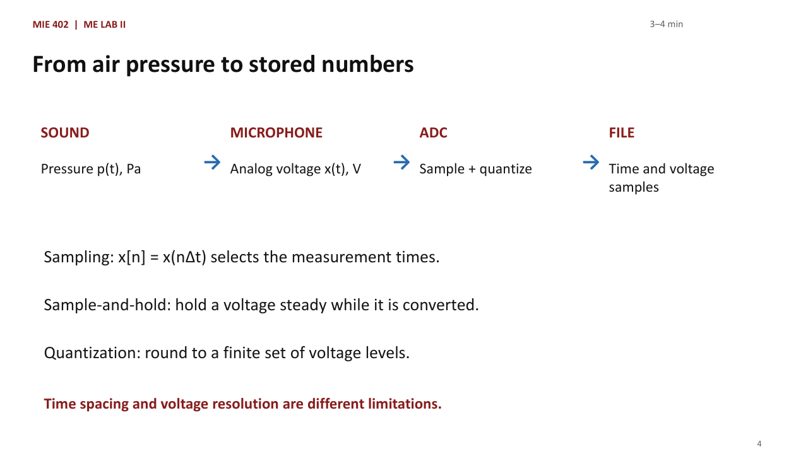
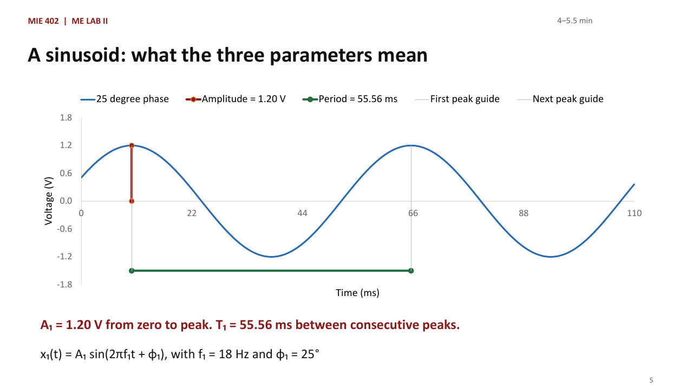
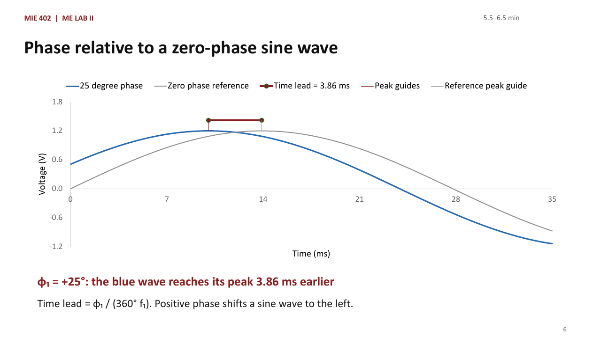
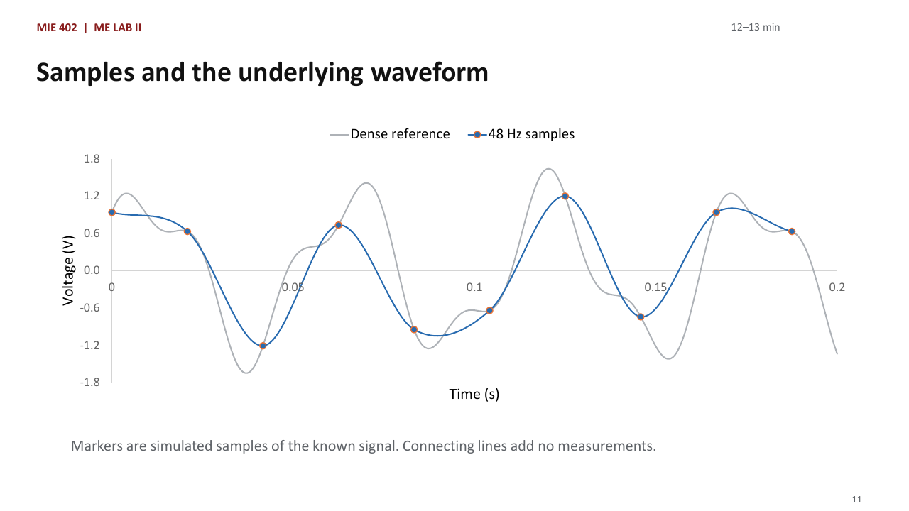
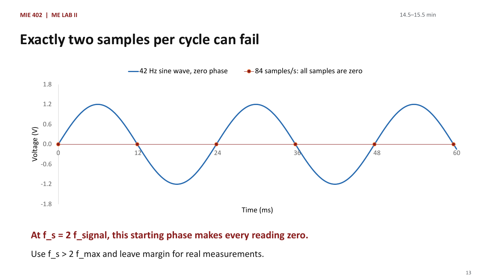
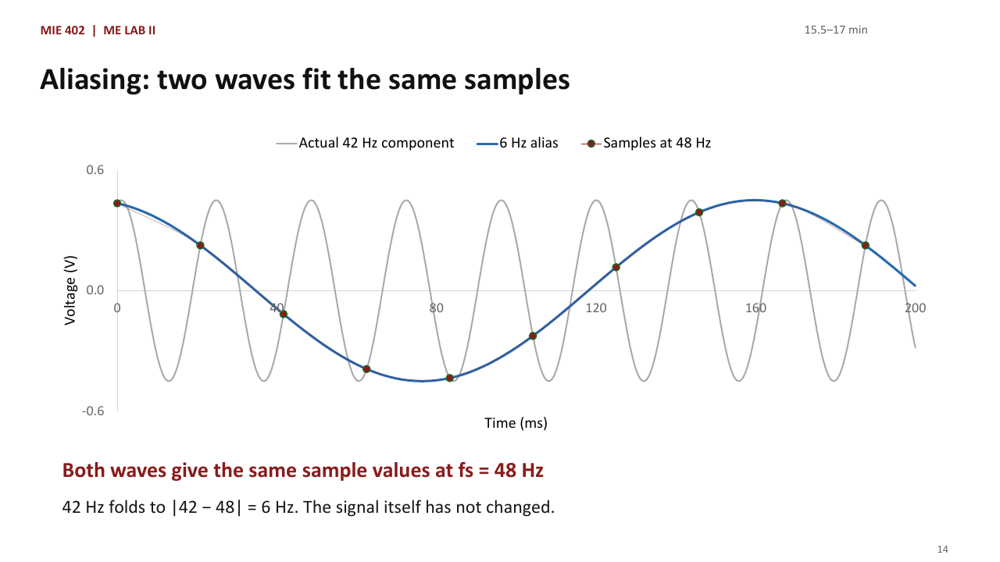
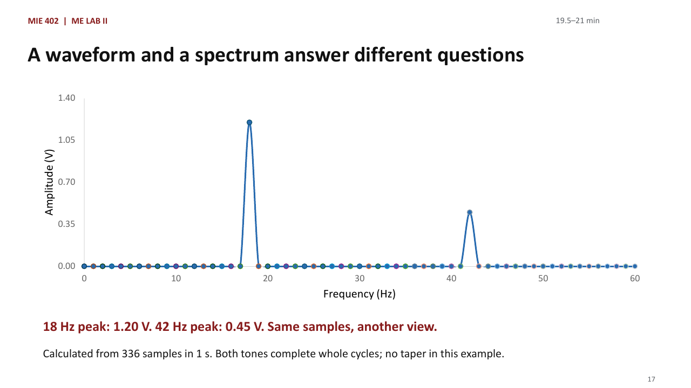
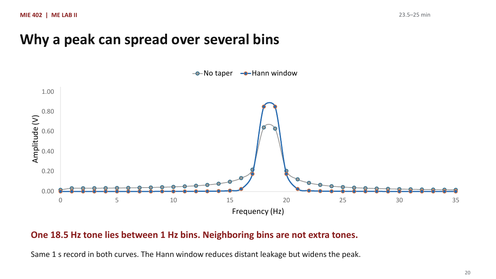
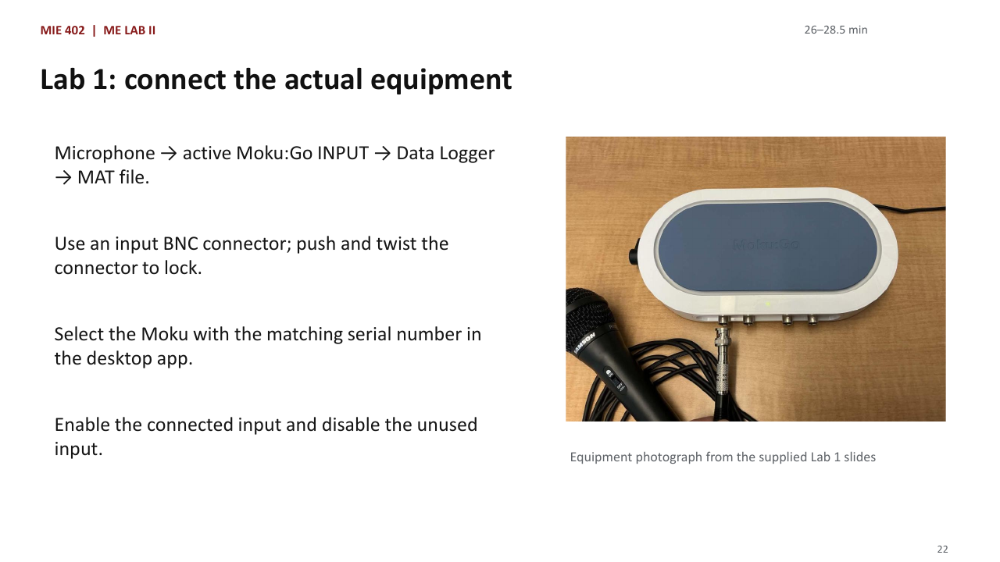
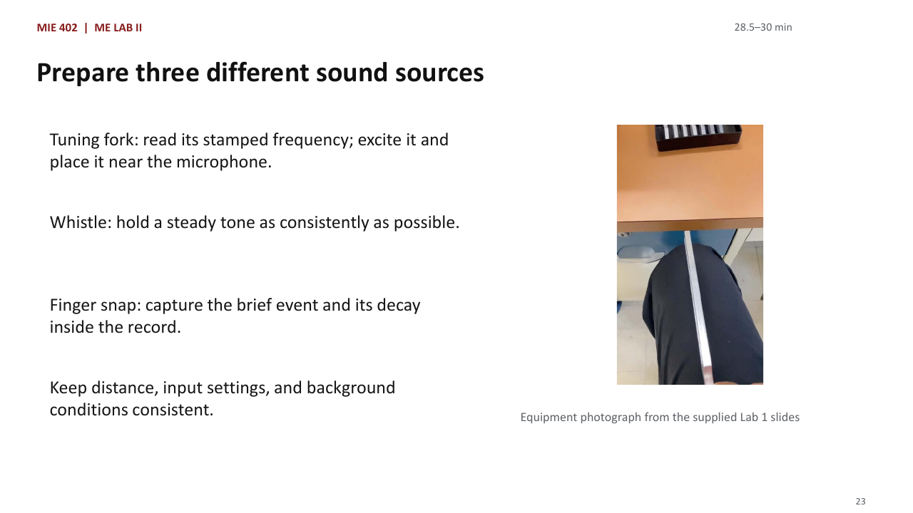

Fall 2026 · 50-minute class
Lab 1: record sound
and explain the data
The signal concepts and instrument steps needed for Lab 1, aligned with the sound-acquisition pre-lab. All Python code is provided. Students calculate, predict, compare, and explain the results.
Lecture files
32 slides · planned 50-minute lesson · complete teaching notes and equipment photographs
Pre-Lab 1 notebook
Prepared analysis cells and a 20-point data-analysis assignment
Lab 1: record sound and explain the data
- What the microphone and recorder measure
- Choose sampling rate and duration; recognize aliasing
- Record three sounds, export MAT files, inspect and replay
- Practice the same measurement decisions in the prepared pre-lab
Teaching explanation
This 50-minute lesson teaches only the concepts and operations needed to acquire and analyze Lab 1 sound signals. Unrelated general examples from the source decks have been removed. Have the course notebook open before class. The pre-lab uses a simulated 320 Hz microphone tone and the same five rate multipliers as the laboratory; the classroom also uses a separate two-tone example to explain spectra.
Source: 2_Fundamentals.pdf; 3_Lab1_Theory.pdf; 4_Lab1_Exp.pdf
Control the variables you can
- Independent variable: the setting deliberately changed, such as sample rate.
- Dependent result: the measured waveform, RMS, or FFT peak.
- Extraneous influences: room noise, distance, orientation, and strike strength.
- Change one setting at a time; record what you could not hold constant.
Teaching explanation
A variable is a physical quantity or setting that influences the test. In this lab we intentionally vary sampling rate and examine its effect on the recorded sound. The microphone voltage is the measured response. Distance, gain, and source strength affect amplitude, so changing them along with sample rate would confuse our interpretation. Repeatable microphone position matters. Separate random noise, which increases scatter, from a repeatable interfering tone such as electrical hum. A tuning fork strike decays and two snaps are never identical; acknowledge these limits when comparing recordings.
Source: 2_Fundamentals.pdf p. 7; 3_Lab1_Theory.pdf p. 6
What will the three sounds look like?
- Tuning fork: a nearly sinusoidal voltage with a decaying amplitude.
- Whistle: a sustained tone that may drift and include harmonics.
- Finger snap: a short transient containing a range of frequencies.
- Background sound and electrical noise also enter the recorded signal.
Teaching explanation
Define signal as information about a measured physical quantity, waveform as its shape in time, magnitude as its size, and frequency as cycles per second for a periodic component. A complex periodic signal can contain harmonics at integer multiples of a fundamental f0. A whistle may be approximately periodic; a tuning fork produces a nearly sinusoidal oscillation with a decaying envelope, so the full record is not perfectly periodic. A finger snap is aperiodic and broadband. Do not assign a unique signal frequency to every transient merely because the FFT has a maximum.
Source: 2_Fundamentals.pdf p. 8; 3_Lab1_Theory.pdf p. 4
From air pressure to stored numbers

- Sound pressure p(t) → microphone voltage x(t) → ADC → saved samples.
- Sampling chooses discrete times: x[n] = x(nΔt).
- Sample-and-hold keeps an input value steady during conversion.
- Quantization rounds voltage to one of the ADC’s available levels.
Teaching explanation
An analog signal is continuous in time. Sampling alone makes time discrete; quantization makes the possible numerical amplitudes discrete. Together they produce a digital record. The stair-step sample-and-hold picture is not proof that the physical sound is stepped. More bits give finer voltage increments for a fixed input span; more samples per second give finer time spacing. These are independent choices. For an ideal B-bit ADC, the step is approximately voltage span divided by 2^B. Avoid claiming a device bit depth here because it is not given in these source slides. Without microphone sensitivity calibration, report volts, not pascals or sound-pressure level.
Source: 3_Lab1_Theory.pdf p. 3; 4_Lab1_Exp.pdf p. 10
A sinusoid: what the three parameters mean

Teaching explanation
Start with one physical voltage tone before showing Python. Point vertically from zero to a crest for amplitude. Point between two neighboring crests for the period and connect period to frequency. Explain that phase sets the wave's starting position at t = 0; it does not change amplitude or frequency. Ask students for the units: volts, hertz, and degrees. Write x(t)=A0+A sin(2π f_signal t+φ). A0 is the vertical DC offset; amplitude is measured from that offset, not necessarily from zero. Angular frequency ω=2πf has units rad/s. The chart uses A0=0. T_signal=1/f_signal, and peak-to-peak amplitude is 2A.
Source: Earlier Lecture 02 teaching example; 4_Lab1_Exp.pdf pp. 7–8
Phase relative to a zero-phase sine wave

Teaching explanation
Compare identical amplitudes and frequencies. The gray reference peaks at 13.889 ms, while the blue wave peaks at 10.031 ms. Their separation is 3.858 ms, equal to 25/360 of a 55.556 ms cycle. Positive phase advances a sine wave. Phase is an angle, not a time: convert using the frequency. At time zero the blue voltage is 1.2 sin(25 degrees) = 0.507 V. NumPy takes radians, so phi1_deg is converted with deg2rad.
Source: Earlier Lecture 02 teaching example; 4_Lab1_Exp.pdf pp. 7–8
A teaching example with two frequency components
- x(t) = 1.20 sin(2π·18t + 25°) + 0.45 cos(2π·42t − 15°) V
- A1 = 1.20 V; f1 = 18 Hz; phi1_deg = 25° for tone 1.
- A2 = 0.45 V; f2 = 42 Hz; phi2_deg = −15° for tone 2.
- f_max = 42 Hz even though this component has the smaller amplitude.
Teaching explanation
Subscript one identifies the first component, not the sample number. f_signal means a physical component frequency; for this signal there are two such frequencies. Sine and cosine differ in phase reference, so interpret each phase with its stated function. Time t is measured in seconds. The shorthand degrees in the written phase must be converted to radians before numerical evaluation; the prepared notebook already does this. Frequency controls how fast the wave repeats, amplitude controls voltage size, and phase controls its starting position. None is the recorder sample rate. This 18/42 Hz mixture illustrates the concepts; the aligned pre-lab instead starts from a 320 Hz pure-tone reference and the laboratory rate multipliers.
Source: 3_Lab1_Theory.pdf p. 4; Fall 2026 Pre-Lab 1
Mean and RMS: continuous and sampled
- Mean: μ = (1/T) ∫ x(t) dt → μ = (1/N) Σ x[n]
- RMS: x_rms = √[(1/T) ∫ x²(t) dt] → √[(1/N) Σ x²[n]]
- Over whole cycles: a zero-offset sinusoid has μ = 0 and RMS = A/√2.
- With offset: RMS² = μ² + RMS² of the zero-mean component.
Teaching explanation
Both integrals run over the chosen record, from t0 to t0+T; sums run from n=0 to N−1. Mean is signed, so a large alternating signal can average to zero. RMS squares each value, averages, then square roots to return the original unit. Over complete cycles, distinct orthogonal tones add in mean square; this pre-lab gives sqrt((1.2²+0.45²)/2)=0.9062 V. This result assumes the full cycles and stated zero offset. A short or transient record depends on where recording starts and ends. RMS in volts cannot be compared directly with a reference frequency in hertz; compare frequency with frequency and voltage statistics with appropriate voltage references.
Source: 3_Lab1_Theory.pdf p. 5
Signal frequency and sampling rate
THE WAVE: f_signal
f_signal counts complete cycles per second.
Unit: hertz (Hz).
Our signal has two components:
f₁ = 18 Hz and f₂ = 42 Hz.
THE RECORDER: f_s
f_s counts stored samples per second.
Unit: samples/s (often written Hz).
We choose this setting on the recorder.
Changing f_s changes the sample times.
Teaching explanation
Say: We have two different clocks. The first belongs to the wave: how often does the voltage complete a cycle? That is f_signal. The second belongs to the recorder: how often do we store a voltage reading? That is f_s. The letter s means sampling, not signal. In the notebook, fs is the sampling rate, while f1 and f2 belong to the two tones. There is no single f_signal for a two-tone signal; we apply the term to each component. Ask: If I change fs from 126 to 336, does the 42 Hz tone become a 336 Hz tone? No. We get more readings of the same 42 Hz wave. Transition: We can now count how many readings fall within one cycle.
Source: Earlier Lecture 02 teaching example; 4_Lab1_Exp.pdf pp. 7–8
Sampling interval and record duration
- Δt = 1/f_s is the time between adjacent samples.
- N is the number of stored samples; T_record = N/f_s.
- Sample times: 0, Δt, …, (N − 1)Δt; do not duplicate the endpoint.
- Example: f_s = 1000 samples/s and N = 2000 give a 2 s record.
Teaching explanation
Distinguish the signal period from the record duration. The signal may repeat hundreds of times while we record two seconds. In the example the last time is 1.999 s relative to the first, but the DFT record duration is 2 s. The Moku export includes time values: inspect their spacing and use the achieved rate, especially if a requested setting is rounded. Number of samples is dimensionless; sample rate is samples per second. This distinction matters later for audio playback.
Source: 3_Lab1_Theory.pdf p. 5; 4_Lab1_Exp.pdf p. 8
Samples and the underlying waveform

Teaching explanation
Use the chart to distinguish the physical signal from its samples. The gray curve represents a dense numerical reference. Blue markers are the only values available to the data acquisition system at 48 Hz. Ask whether the connecting line proves what happened between samples. It does not.
Source: Earlier Lecture 02 teaching example; 4_Lab1_Exp.pdf pp. 7–8
The Nyquist condition
THE SIGNAL REQUIREMENT
f_max is the highest frequency present.
For our two tones: f_max = 42 Hz.
To avoid aliasing in this signal:
f_s > 2 f_max = 84 samples/s.
THE RECORDER LIMIT
Nyquist frequency: f_N = f_s / 2.
At f_s = 126 samples/s: f_N = 63 Hz.
Both 18 Hz and 42 Hz are below 63 Hz.
The same condition is f_max < f_N.
Teaching explanation
Say: f_max belongs to the signal. f_N belongs to the selected sampling rate. They are not two names for the same quantity. The sampling theorem tells us that a signal confined to frequencies below half the sampling rate can, in principle, be recovered from ideal uniform samples. For our ordinary real-valued voltage measurement starting at low frequency, we require fs greater than twice the highest frequency present. We use a strict inequality and leave margin in practice. The 42 Hz component is smaller in amplitude than the 18 Hz component, but it still determines the requirement. Ask: At fs = 126, what is f_N? Answer: 63 Hz. Is 42 below it? Yes. Transition: Why do we avoid exactly two samples per cycle?
Source: Earlier Lecture 02 teaching example; 4_Lab1_Exp.pdf pp. 7–8
Exactly two samples per cycle can fail

Teaching explanation
Say: This example uses a 42 Hz sine wave with zero phase, rather than our assigned two-tone waveform. Sample at exactly 84 samples per second. Every reading lands on a zero crossing, so all stored values are zero. A different starting phase gives different values, which is precisely why the boundary is unsafe for recovering an arbitrary sinusoid. The curve has not disappeared; the recording has missed it. This is a direct reason to write greater than, not equal to, twice the maximum frequency. Meeting the ideal theorem with three samples per cycle also does not mean straight lines between the readings reproduce the waveform. Reconstruction and a visually smooth connected plot are different tasks.
Source: Earlier Lecture 02 teaching example; 4_Lab1_Exp.pdf pp. 7–8
Aliasing: two waves fit the same samples

Teaching explanation
Say: Look only at the red points first. These are the readings available to the recorder. The gray 42 Hz wave passes through every red point. The blue 6 Hz wave also passes through every red point. If I give you only these readings, you cannot decide which of these two waves produced them. That ambiguity is aliasing. At fs = 48, the displayed low-frequency interpretation is 6 Hz because 42 exceeds the 24 Hz Nyquist frequency. The source still oscillates at 42 Hz; sampling has lost the information needed to identify it. This plot isolates the second component of our signal. The 18 Hz component remains distinguishable in this case. The alias phase is chosen so both curves agree exactly at the sample times. Taking an FFT cannot recreate the missing information.
Source: Earlier Lecture 02 teaching example; 4_Lab1_Exp.pdf pp. 7–8
Predict an alias before measuring
- Choose an integer k so f_alias = |f_signal − k f_s| lies in [0, f_s/2].
- For a 42 Hz tone at 48 samples/s: |42 − 48| = 6 Hz.
- For a pure tone sampled at its own frequency, every reading has the same phase.
- A longer record or an FFT cannot recover information lost through aliasing.
Teaching explanation
At fs equal to f_signal, an ideal sinusoid is sampled at the same point of each cycle. Depending on starting phase, the samples form a nonzero constant or all zeros: the result looks like DC rather than the original oscillation. For more distant frequencies, do not apply a single subtraction blindly; fold into zero through fs/2 using the appropriate integer. Real multi-tone signals can have several aliases and overlaps. A smaller observed peak can be a filter effect instead of a clean unattenuated alias. Separate the ideal prediction from the instrument observation.
Source: 4_Lab1_Exp.pdf p. 8
Fourier series, transform, DFT, and FFT
- Fourier series: periodic waveform = sum of harmonic sinusoids.
- Fourier transform: frequency description of suitable continuous signals.
- DFT: frequency coefficients of N stored samples, X[k].
- FFT: an efficient algorithm for computing the DFT.
Teaching explanation
The prism analogy in the source separates a mixture into components. For sound, the components are sinusoidal frequencies rather than colors. A Fourier series uses discrete harmonics of a repeating waveform. A continuous transform describes a broader class of signals; it is not literally an ordinary integral that converges for every possible function. The DFT uses a finite record and a discrete frequency grid. Its definition is X[k]=sum from n=0 to N−1 of x[n] exp(−i2πkn/N), where k indexes frequency bins, n indexes time samples, and i²=−1. Students do not implement the formula; the prepared FFT calculates it. The complex coefficient carries amplitude and phase.
Source: 4_Lab1_Exp.pdf p. 7; 3_Lab1_Theory.pdf p. 4
A waveform and a spectrum answer different questions

Teaching explanation
Say: The waveform answers what the voltage is doing as time passes. The frequency spectrum answers which repeating components are present. The FFT is an efficient calculation of the discrete Fourier transform. It compares the recorded samples with a set of sinusoidal patterns and returns their contributions. This plot is calculated from the same two-tone signal using 336 samples in one second, with no window taper in this particular teaching example. Both tones complete whole cycles and lie exactly on FFT bins. Therefore the one-sided amplitude spectrum has peaks at 18 and 42 Hz with amplitudes 1.20 and 0.45 V. The graph is not new data; it is another description of the same samples. We will discuss the notebook's Hann window after students can read the axes.
Source: Earlier Lecture 02 teaching example; 4_Lab1_Exp.pdf pp. 7–8
Reading an FFT peak
HORIZONTAL POSITION
The x-axis is frequency in Hz.
A peak at 18 Hz means 18 cycles/s.
This axis is not time.
It is not the recorder sampling rate.
VERTICAL HEIGHT
Here the y-axis is amplitude in volts.
The 18 Hz peak is about 1.20 V.
This is peak amplitude, not RMS.
Its single-tone RMS is 1.20/√2 V.
Teaching explanation
Point to the 18 Hz peak on the previous figure and ask two separate questions: Where is it? How tall is it? Location gives frequency; height estimates amplitude using the chosen spectrum normalization. This lecture uses a one-sided amplitude spectrum, not a power spectral density. Power density would have different units such as volts squared per hertz. One-sided means showing the nonnegative frequencies for a real-valued time signal; the negative-frequency half contains matching information. The prepared code handles the scaling. Do not ask students to implement the FFT. A wrong sample-rate value used in analysis gives a wrong horizontal frequency axis, so always retain the actual recording rate.
Source: Earlier Lecture 02 teaching example; 4_Lab1_Exp.pdf pp. 7–8
Record duration and FFT frequency bins
THREE ACQUISITION QUANTITIES
N = number of stored samples.
f_s = samples per second.
T_record = N / f_s, in seconds.
T_record is not the period of one wave.
THE FFT FREQUENCY GRID
A bin is one frequency checked by the FFT.
Bin spacing: Δf = f_s / N = 1/T_record.
T_record = 1 s gives bins 1 Hz apart.
T_record = 0.25 s gives bins 4 Hz apart.
Teaching explanation
Say: The word bin simply means a position on the FFT frequency grid. For a one-second record the frequencies are zero, one, two, three hertz and so on up to the Nyquist boundary. For a quarter-second record they are zero, four, eight, twelve hertz and so on. Define N, fs and T_record before substituting numbers. Distinguish T_record from T_signal: one is how long we record, the other is how long the wave takes to repeat. N samples at times 0 through (N-1)/fs still correspond to an N/fs FFT record duration. We do not add a duplicate endpoint. Ask: Which change gives finer bin spacing, longer recording at fixed fs or only raising fs while keeping record duration fixed? Longer recording.
Source: Earlier Lecture 02 teaching example; 4_Lab1_Exp.pdf pp. 7–8
Why a peak can spread over several bins

Teaching explanation
Say: Here is a separate teaching example with a single 18.5 Hz tone recorded for one second at 128 samples per second. Its frequency is halfway between the 18 and 19 Hz FFT bins. The transform needs several bins to describe the finite record, so one physical tone produces a spread of spectral values. This is spectral leakage. The blue and gray curves are calculated from identical samples with two different windows. Do not interpret every neighboring nonzero bin as a separate physical tone. The notebook's quarter-second case has a similar issue: 18 and 42 Hz fall between four-hertz bins. Leakage is different from aliasing: leakage spreads a finite-record peak, while aliasing makes distinct input frequencies share the same samples.
Source: Earlier Lecture 02 teaching example; 4_Lab1_Exp.pdf pp. 7–8
Windowing and filtering have different jobs
- Hann window: taper record ends; reduce distant leakage, but widen peaks.
- Amplitude scaling includes window gain; off-bin peaks still need care.
- Anti-alias filter: attenuate unwanted high frequencies before downsampling.
- Neither a window nor later smoothing can reverse an existing alias.
Teaching explanation
For an unwindowed pure tone, coherent sampling means f_signal=N_cycles*fs/N for integer N_cycles. This is the proper whole-cycle condition; the source board statement fs ≠ Nf is not a general leakage criterion. A longer record reduces bin spacing but does not guarantee zero leakage for every frequency. The Hann window reduces discontinuity effects at record boundaries, yet broader peaks can merge. Its coherent gain is the mean window weight. Real logger modes may filter or average, so record the acquisition mode and do not claim a low-rate result is solely aliasing without considering the signal path. Five to ten samples per highest-frequency cycle is a useful plotting rule of thumb from the source, not a universal guarantee of accuracy.
Source: 4_Lab1_Exp.pdf p. 8
Lab 1: connect the actual equipment

- Microphone → active Moku:Go INPUT → Data Logger → MAT file.
- Use an input BNC connector; push and twist the connector to lock.
- Select the Moku with the matching serial number in the desktop app.
- Enable the connected input and disable the unused input.
Teaching explanation
Point to the photographs from the supplied experiment deck: Moku:Go, microphone, and BNC plug. The accompanying local lab procedure identifies the two left connectors as inputs; verify the panel labels, not just the visual order. Select Data Logger after connecting to the correct serial-number device. Do not attach the microphone to an output. The microphone converts acoustic pressure variations into voltage; the DAQ records voltage. Tell students to verify a changing signal before collecting the full matrix. This is also the place to point out where the saved data will go.
Source: 4_Lab1_Exp.pdf p. 10; LAB1_MIE402.pdf p. 2
Prepare three different sound sources

- Tuning fork: read its stamped frequency; excite it and place it near the microphone.
- Whistle: hold a steady tone as consistently as possible.
- Finger snap: capture the brief event and its decay inside the record.
- Keep distance, input settings, and background conditions consistent.
Teaching explanation
Use the tuning-fork photo from the actual source file. Avoid touching the vibrating tines while recording. A fork mainly gives a decaying tone; a whistle can drift and contain harmonics; a snap is transient with energy over a broad range. Begin acquisition before a snap or use the available delayed start so the event falls inside the saved segment. A one-second record of silence with the event just outside it is not useful data. The original slides also show hand whistling; students can use an attainable sound source rather than spending lab time mastering a trick.
Source: 4_Lab1_Exp.pdf pp. 11–14
What does f mean in the laboratory task?
- For the tuning fork, f_ref is its labeled fundamental frequency.
- For a steady whistle, estimate f_ref from an adequately sampled pilot record.
- A snap has no single fundamental: identify and state a reference frequency.
- f_ref sets the comparison rates; f_max sets the anti-alias requirement.
Teaching explanation
The source task uses 100f, 10f, 3f, 1.4f, and 1f but does not define f for a broadband snap. Make this limitation explicit. For a snap, agree with the GTA on a reference from a high-rate pilot spectrum and record that choice; do not assert the dominant peak equals the highest frequency present. A whistle also has harmonics above its fundamental. Thus fs=3f_ref satisfies the theorem for an isolated reference tone, but might not capture all harmonics or transient bandwidth. Students must distinguish the intentionally chosen comparison reference from the actual highest significant input frequency.
Source: 4_Lab1_Exp.pdf p. 9; LAB1_MIE402.pdf p. 1
The recording matrix: at least 15 records
- For EACH of at least three sounds, record at 100f_ref, 10f_ref, 3f_ref, 1.4f_ref, and 1f_ref.
- Every record must last at least 1 second. Save the actual rate and duration.
- For a 256 Hz fork: 25,600; 2,560; 768; 358.4; and 256 samples/s.
- The last two settings deliberately undersample the reference tone.
Teaching explanation
Three sources times five rates gives a minimum of fifteen recordings. Extra repeats are useful if a recording is clipped, too noisy, or misses the event. For a single 256 Hz component at 358.4 samples per second, Nyquist is 179.2 Hz and the ideal alias is 102.4 Hz. At 256 samples per second, the ideal tone appears constant, with value determined by phase. The logger may round a requested rate; record achieved sample spacing and recalculate predictions from that. High multipliers are the assigned comparison cases, not guarantees that every possible broadband component is captured.
Source: 4_Lab1_Exp.pdf p. 9; LAB1_MIE402.pdf pp. 1–2
Set Data Logger before pressing Record
- Acquisition: enter Rate and record the selected mode, e.g. Precision.
- Logging: choose Immediate or Delayed and set Duration ≥ 1 s.
- Filename prefix: include source, reference frequency, rate, and trial.
- Start recording; inspect the waveform for clipping, silence, and missed events.
Teaching explanation
Demonstrate the labels from the supplied Data Collection Procedure. The exact app layout can differ, so follow its labels and the GTA setup rather than inventing unverified button positions. Activate the correct input slider. Choose Immediate for recording as soon as the red button is pressed or Delayed to allow time to excite the source. Example prefix: fork256_fs2560_trial01. Keep raw recordings, not just screenshots. Flat-topped peaks suggest input clipping; a flat trace could mean an inactive input, loose connection, silence, or the special undersampled case, so use a known high-rate recording to troubleshoot.
Source: 4_Lab1_Exp.pdf pp. 9–10; LAB1_MIE402.pdf p. 2
Export MAT files and verify one immediately
- Open File Manager; select recordings → Convert to MATLAB → Download.
- Keep the exported time column and voltage column together.
- Plot one file immediately and calculate the actual sample interval.
- Back up the data; do not leave with only a screenshot or an empty file.
Teaching explanation
The local MATLAB script expects exp.moku.data(:,1) as time and column 2 as voltage for the active channel. Check the exported structure and channel rather than assuming every export is identical. MAT is a MATLAB data container; converting the file format does not repair poor sampling. Inspect adjacent time differences to estimate fs=1/Δt and check uniform spacing. Record N and T_record=N/fs. Confirm that the sound is visible within the recording window. Save rate, mode, duration, source identity, source frequency, input, distance, and trial notes with the file. The source explicitly asks students to take notes and measure everything needed for later analysis.
Source: 4_Lab1_Exp.pdf pp. 9, 16–17; LAB1_MIE402.pdf p. 3
Replay at the recorded rate
- Playback must use the original f_s, or an explicitly resampled audio signal.
- N is a sample count; it equals f_s numerically only for a 1 s record.
- Changing playback rate changes pitch and duration.
- Compare what you hear with the waveform and spectrum; note device limits.
Teaching explanation
Explain a concrete case: 2000 samples recorded at 1000 samples per second last two seconds. Playing them at 2000 samples per second compresses them to one second and doubles perceived frequencies. The old helper calls sound(20*x,length(x)); its second argument is correct only for an exactly one-second record. Use the actual sample rate when running a corrected instructor-provided workflow. Do not assign students new code writing. The 20-times gain can also clip audio; use controlled gain and do not compare loudness across separately normalized files as if it were calibrated amplitude. Audio devices may reject low or unusual rates: document this and use approved resampling for listening. Resampling cannot restore frequencies already aliased during acquisition.
Source: 4_Lab1_Exp.pdf p. 16; LAB1_PlotSignal_PlaySound.m
Analyze: waveform, statistics, and spectrum
- Waveform: same time scale, labeled volts and seconds; show sample markers.
- Statistics: mean and RMS over a stated interval, with consistent gain.
- Spectrum: report f_s, N, window, FFT-bin spacing, and main peak locations.
- Compare each low-rate case with the high-rate reference and the predicted alias.
Teaching explanation
For a tuning fork, compare the spectral frequency with its stamped value and express relative error only against a valid nonzero reference. For RMS, use an appropriate voltage reference or the high-rate measurement, not the fork frequency. A decaying fork or snap has record-dependent RMS; compare matching windows where possible and state that separate strikes differ. The strongest FFT peak is not automatically the fundamental. Look for harmonics, noise, leakage, and clipping effects. A correct-looking RMS does not guarantee correct frequencies. A good report states the settings, predicts a result, reports a measured value with units, and explains any mismatch.
Source: 4_Lab1_Exp.pdf p. 16; LAB1_MIE402.pdf p. 1
Before leaving: show evidence and save it
- Show the GTA one valid high-rate record and its spectrum.
- For the tuning fork, identify a clear peak near the labeled frequency.
- Confirm all sound/rate cases, metadata, MAT files, and backups are present.
- Report: method, results, comparison, discussion, conclusions, and references.
Teaching explanation
The local lab sheet explicitly requires GTA verification of one valid dataset and corresponding spectrum. Check that students can explain the peak rather than only display a plot. Keep the report concise using the current course template: the source outline includes a short abstract, introduction, method, results, comparison, discussion, conclusions, references, and appendices. Place long raw data and supporting detail in appendices rather than hiding the main evidence there. Report differences honestly: aliasing shifts represented frequencies, leakage spreads finite-record peaks, clipping changes waveform shape, and repeated sources can vary in amplitude.
Source: 4_Lab1_Exp.pdf pp. 17–18; LAB1_MIE402.pdf p. 1
Pre-lab: rehearse the same measurement decisions
- A prepared 320 Hz microphone-voltage model replaces the physical source.
- Use the lab’s five rates: 100f, 10f, 3f, 1.4f, and 1f.
- Predict, run, compare waveforms and FFTs, then justify recording settings.
- All code is supplied; submit calculations, evidence, and explanations.
Teaching explanation
Open the aligned Pre-Lab 1 Colab notebook. The reference is a simulated clean 320 Hz tone with 0.80 V peak amplitude and 30 degree phase. Its frequency is a teaching value, not an assertion about a specific fork in the lab. The five rate multipliers exactly match the laboratory task. Point to the prediction table before running the FFT. Demonstrate running a code cell and editing a Markdown response with Shift+Enter. Students compare observed mean, RMS, and spectra with their predictions, then examine a second harmonic, record duration, and a playback-rate mistake. The last task is an acquisition checklist for a fork, whistle, and snap. No programming or missing-code completion is assigned. Do not fill their response tables during the demonstration. Use the instructor notes to discuss how a small RMS error can coexist with a wrong spectrum.
Source: Fall 2026 Pre-Lab 1; course Colab notebook
Final check: explain your measurement
- What is a physical signal frequency, and what is the recorder sample rate?
- Why can a low-rate waveform or FFT show a false frequency?
- What do you save before leaving the laboratory?
- Pre-labs normally appear Monday; submit before your own lab section begins.
Teaching explanation
Ask for short answers: the first is cycles per second of a physical component; the second is stored samples per second. Aliasing occurs because different input waves can share the same sample values. Students need MAT files, achieved rate, duration, channel and mode, source information, and notes, plus one GTA-checked result. The pre-lab is data analysis with provided code. Run all cells, keep figures visible, complete the explanations, and submit the requested HTML or PDF to Canvas before the student’s own section begins. Late pre-labs are not accepted. Finish by pointing to the clickable lecture, report template, and Colab links on the course website.
Source: Current Fall 2026 course policy